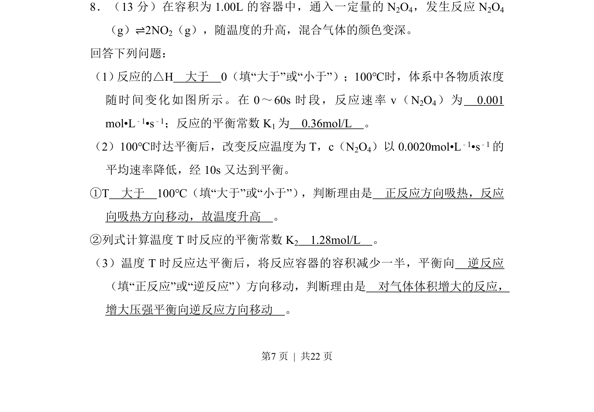
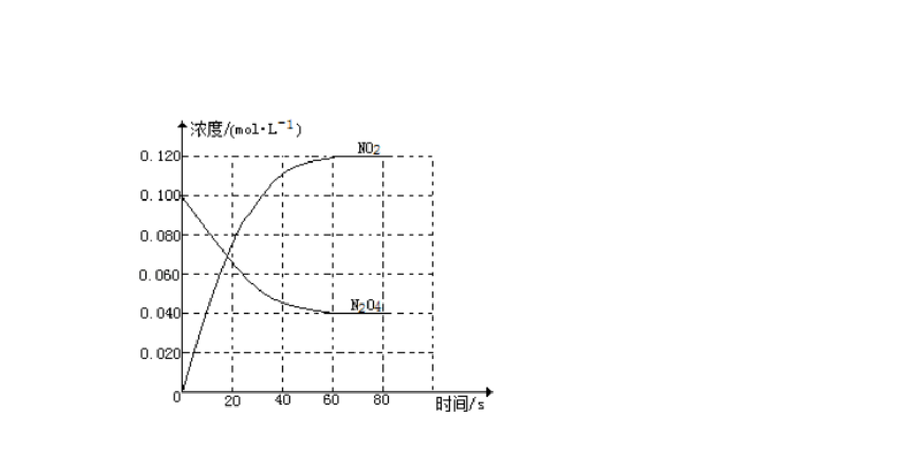
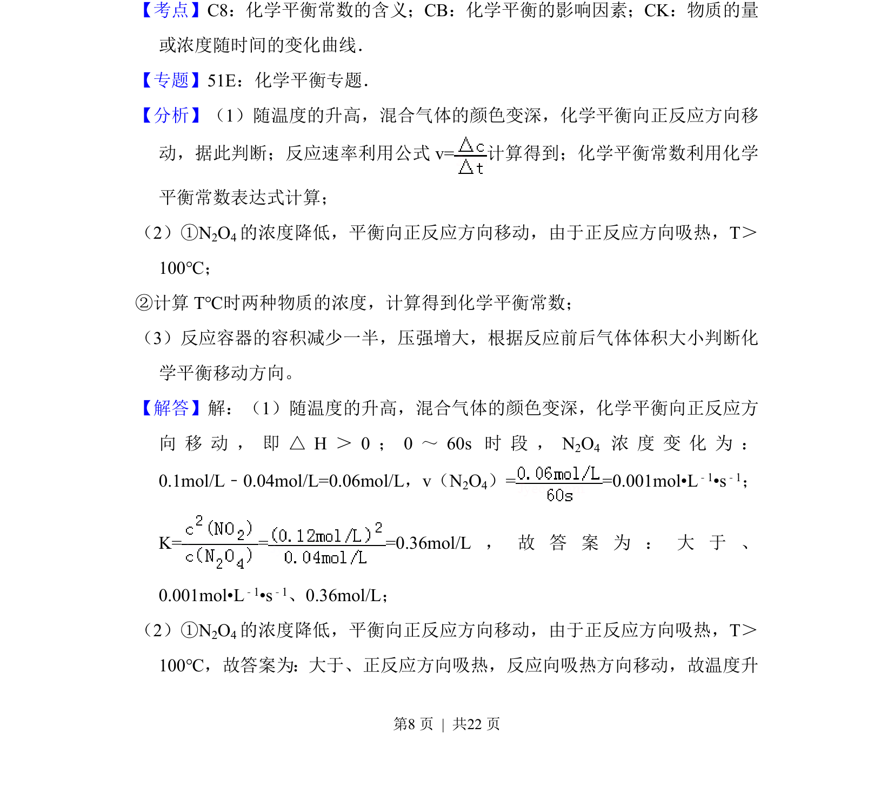
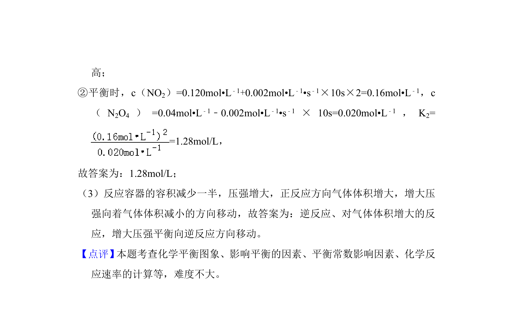

考点：焓变判断 反应速率 化学平衡常数 勒夏特列原理


考查N2O4分解反应的热效应、反应速率、平衡常数计算及温度、压强对平衡的影响。


📄 原 PDF 第 7 页：
素材/真题/吉林/2008-2024·（吉林）化学高考真题/2014年高考化学试卷（新课标Ⅱ）（解析卷）.pdf
8．（13分）在容积为1.00L的容器中，通入一定量的N 2O4，发生反应N 2O4 （g）⇌2NO2（g），随温度的升高，混合气体的颜色变深。 回答下列问题： （1） 反应的△H 大于 0（填“大于”或“小于”）；100℃时，体系中各物质浓度 随时间变化如图所示。在0～60s时段，反应速率v（N 2O4）为 0.001 mol•L﹣1•s﹣1；反应的平衡常数K 1为 0.36mol/L 。 （2）100℃时达平衡后，改变反应温度为T，c（N 2O4）以0.0020mol•L ﹣1•s﹣1的 平均速率降低，经10s又达到平衡。 ①T 大于 100℃（填“大于”或“小于”） ，判断理由是 正反应方向吸热，反应 向吸热方向移动，故温度升高 。 ②列式计算温度T时反应的平衡常数K 2 1.28mol/L 。 （3）温度T时反应达平衡后，将反应容器的容积减少一半，平衡向 逆反应 （填“正反应”或“逆反应”）方向移动，判断理由是 对气体体积增大的反应， 增大压强平衡向逆反应方向移动 。